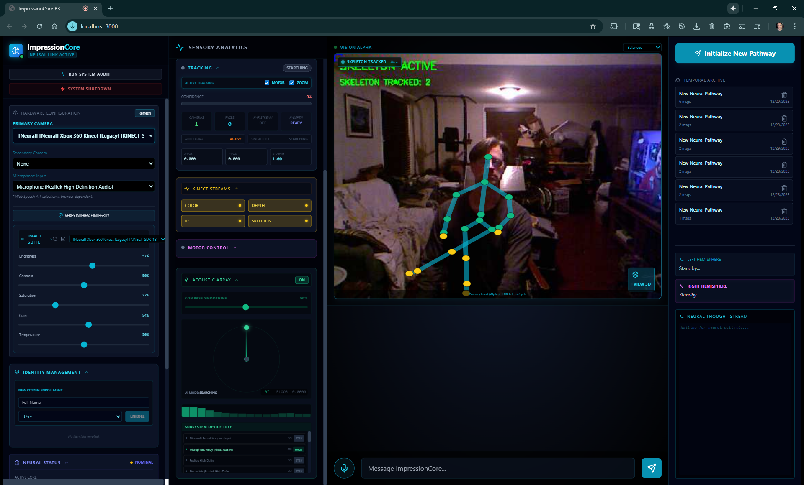
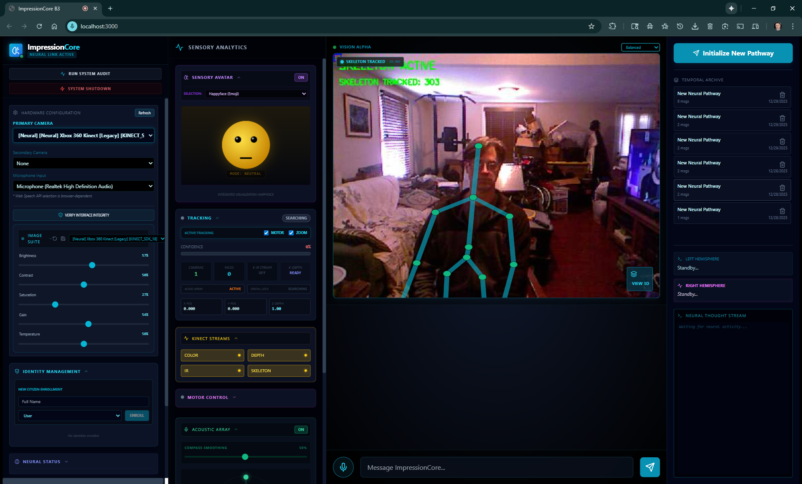
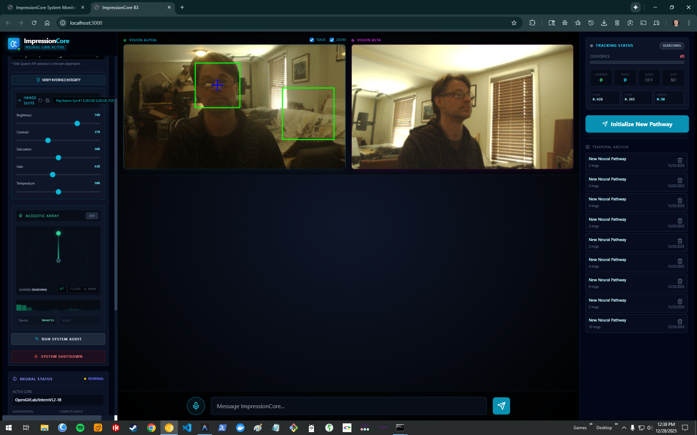
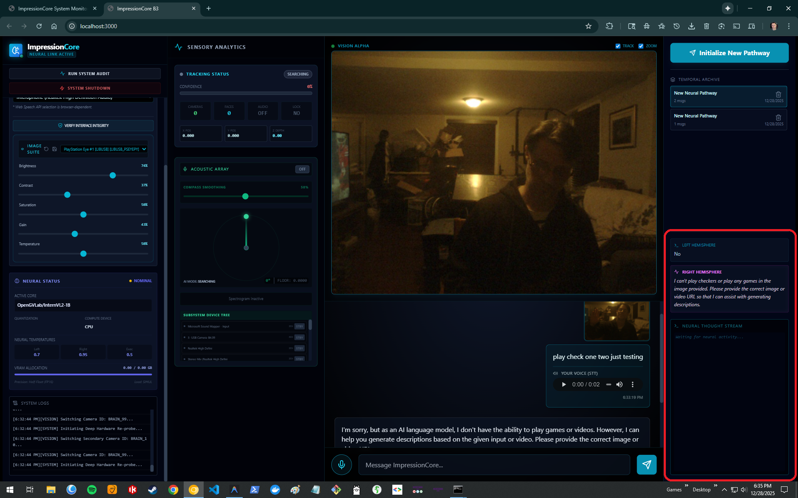
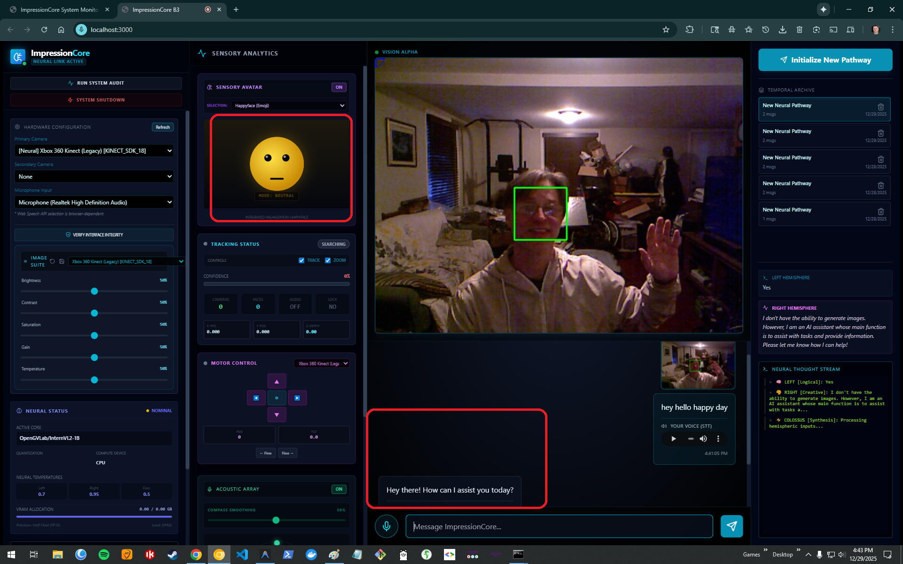

Sensory Cortex & Physical Embodiment
True intelligence cannot exist in a disembodied text vacuum. ImpressionCore anchors cognitive forward passes directly into the physical world through 3D depth point clouds, spatial acoustic arrays, robotic pan-tilt tracking, and continuous neural thought telemetry.

Anchoring AI into Real-World Physics
Kinect RGB-D Spatial Point Cloud Fusion
By fusing color video with infrared structured light depth arrays, ImpressionCore constructs dynamic 3D spatial point clouds of the user's physical environment.
- Skeletal Landmark Tracking: 25-joint 3D skeletal kinematic estimation for posture and gesture recognition.
- Spatial Proximity Gating: Dynamic attention weighting based on physical distance and gaze vector alignment.
- Zero-Cloud Edge Processing: Runs 30 FPS depth processing entirely on local CPU and GPU shaders.


Multi-Channel Acoustic Beamforming
Integrating 4-channel microphone arrays (PlayStation Eye, boundary arrays) to calculate acoustic Direction-of-Arrival (DOA) in real time.
- Spatial Speaker Isolation: Steers acoustic beamformer toward active speaker, isolating voice from ambient noise.
- Acoustic-Visual Cross-Validation: Correlates audio arrival vectors with Kinect visual bounding boxes.
- Emotional Prosody Extraction: Continuous pitch, energy, and timbre analysis feeding the Right Hemisphere.
Robotic Vision & DirectShow Control
ImpressionCore controls motorized pan-tilt-zoom robotic cameras (QuickCam Orbit) with native DirectShow driver hooks, locking onto physical focal points autonomously.
- Automated Mechanical PTZ: Smooth motorized panning and tilting tracking user movement across physical rooms.
- Sub-Millisecond Driver Polling: Direct Windows DirectShow COM hooks bypassing high-latency middleware.


Real-Time Thought Streams & Avatar Prosody
ImpressionCore continuously updates a live neural thought stream, exposing intermediate token probability distributions, attention entropy, and emotional prosody sync.
- Non-Blocking Sensory Ingestion: Continuous async ring buffers preventing GPU stalls during heavy I/O.
- Synchronized Speech & Face Avatar: Neural vocoder driving real-time 3D facial blendshapes and phoneme visemes.
Avatar Response & Emotional Prosody
Synchronizing cognitive output with lifelike vocal prosody and expressive visual presence.
